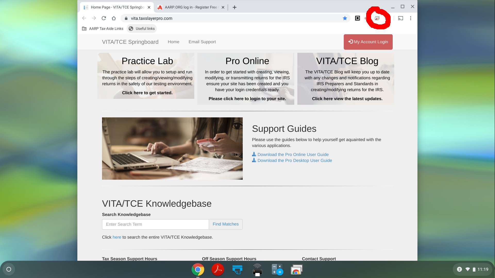
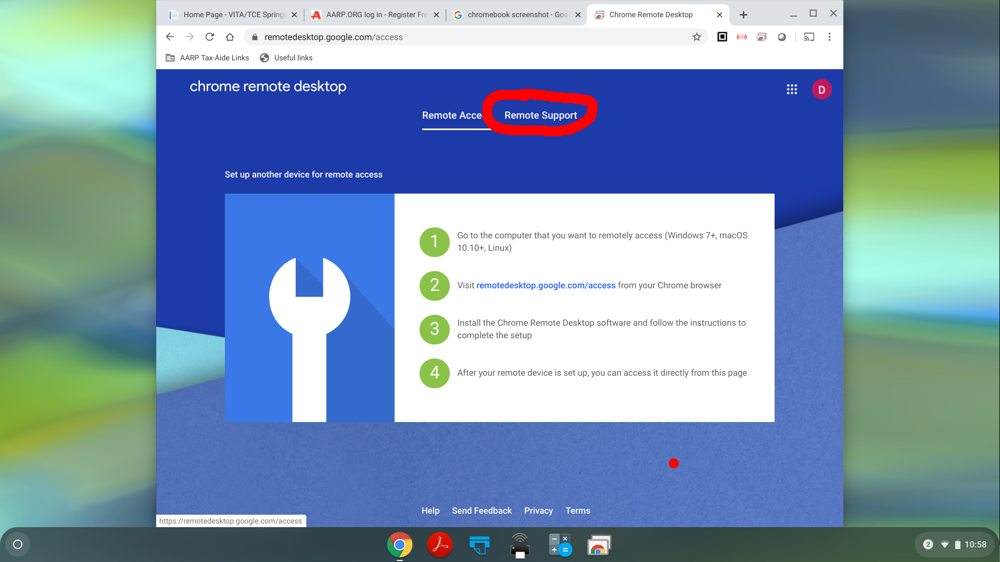
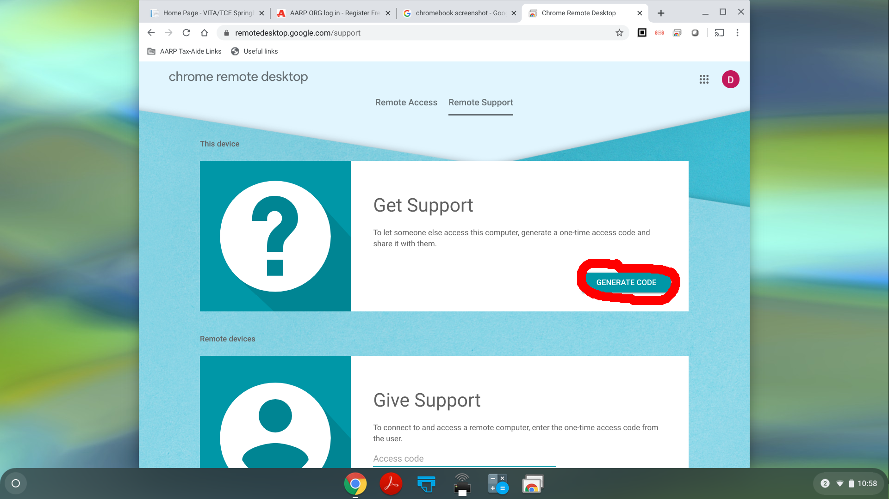
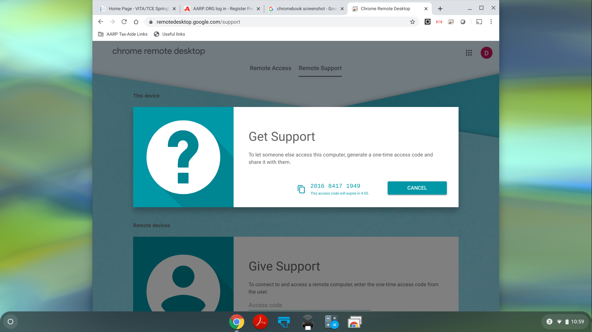
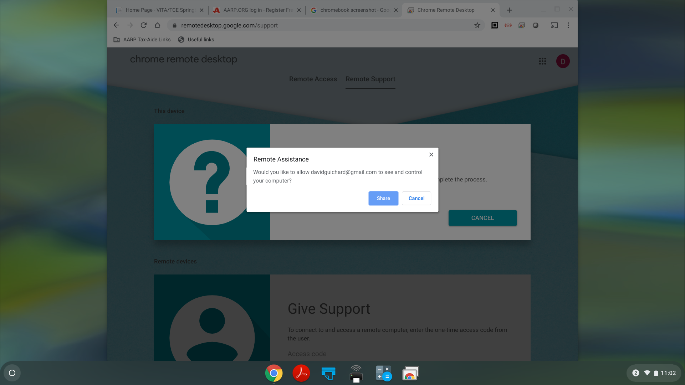
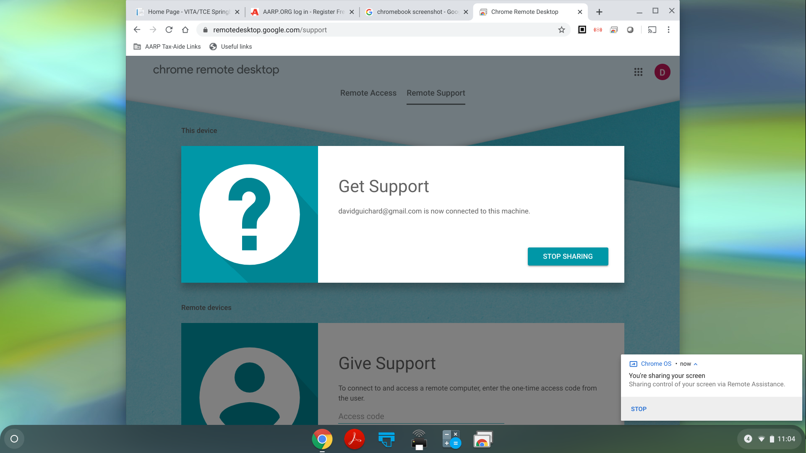

To let someone remotely control your chromebook for support, start by clicking on the icon at the top right of your browser window circled in this screenshot:
If you see this page, click on "Remote Support" at the top:
Now you should see the page below. Next you will click the "Generate Code" button. At this point you should be on the phone with the person who will provide the support. After you click the button, the other person will have 5 minutes to enter the code and connect to your Chromebook.
After you click "Generate Code", you will see a 12-digit code number on the screen which you should read or text to the person providing support.
When the person has entered the code, you should see a box giving you the option to share your computer; click on the button labled "Share".
Now you should see this page:
Eventually, the person providing support should close the connection, or you can come back to this tab in the browser and click "Stop Sharing".